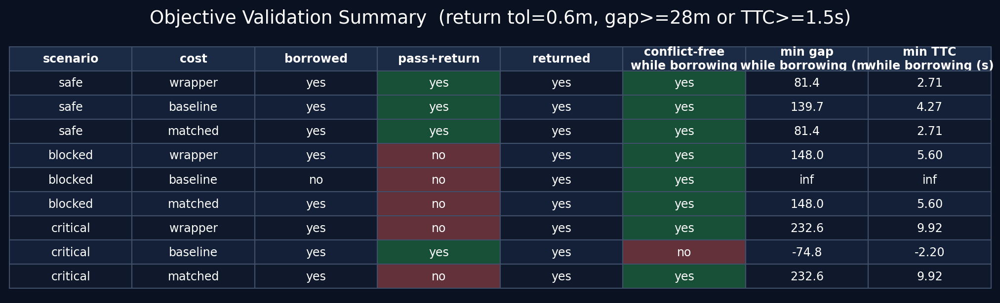
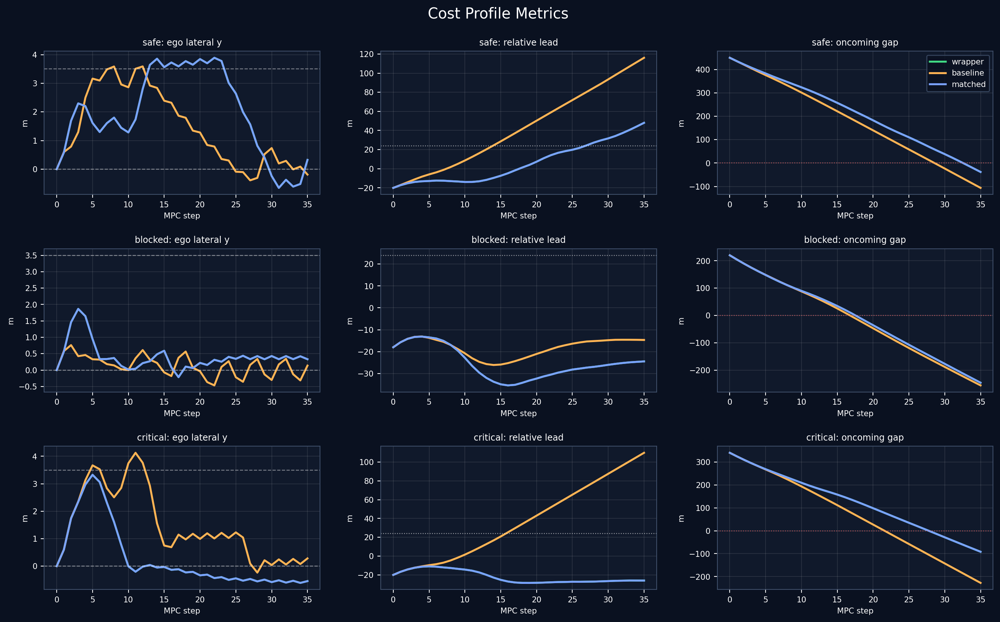
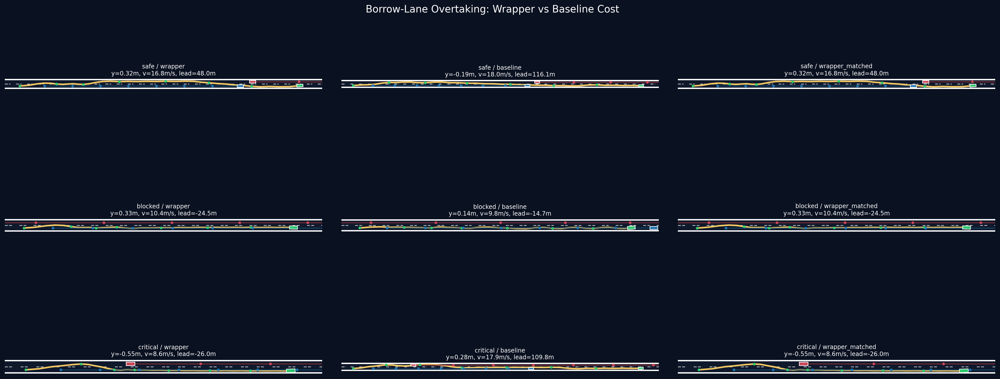

Constraint Wrapper Validation Report
Generated: 2026-06-23 21:15:35
结论摘要：matched baseline 不调用 wrapper API，但手写复现 wrapper 的 log/saturation/hard/tunable/priority 变换。测试中 matched 与 wrapper 行为和指标一致，说明效果来自这套 constraint-to-cost transformation；wrapper 的优势是把这套变换结构化、参数化、可复用，降低手写层级和饱和顺序出错风险。
1. 测试设置
- 场景：
borrow_overtake_safe,borrow_overtake_blocked,borrow_overtake_critical - 求解器：同一 MGIGO / MPC 闭环求解器，同一随机种子。
- 底层项：三组 cost 使用同一批 objective / STL-style violation 函数。
- 判据：return tolerance = 0.6 m；借道期间 gap >= 28 m 或 TTC >= 1.5 s 判为 conflict-free。
2. Cost Profile 对比
| profile | 说明 | 用途 |
|---|---|---|
| wrapper | 调用 constraint_dsl.build()，声明 hard/tunable/priority。 | 同事 wrapper 主方案 |
| old baseline | 旧手写 hierarchical cost，饱和尺度和 hard penalty 与 wrapper 不一致。 | 对比旧手写方法 |
| matched baseline | 不调用 wrapper，但手写复现 wrapper 的数学变换。 | 控制变量验证 |
3. 结果表
| scenario | cost | pass+return | returned | conflict-free while borrowing | min gap while borrowing (m) | min TTC while borrowing (s) | final y (m) | final v (m/s) | final lead (m) |
|---|---|---|---|---|---|---|---|---|---|
| safe | wrapper | True | True | True | 81.4 | 2.71 | 0.32 | 16.8 | 48.0 |
| safe | old baseline | True | True | True | 139.7 | 4.27 | -0.19 | 18.0 | 116.1 |
| safe | matched baseline | True | True | True | 81.4 | 2.71 | 0.32 | 16.8 | 48.0 |
| blocked | wrapper | False | True | True | 148.0 | 5.60 | 0.33 | 10.4 | -24.5 |
| blocked | old baseline | False | True | True | inf | inf | 0.14 | 9.8 | -14.7 |
| blocked | matched baseline | False | True | True | 148.0 | 5.60 | 0.33 | 10.4 | -24.5 |
| critical | wrapper | False | True | True | 232.6 | 9.92 | -0.55 | 8.6 | -26.0 |
| critical | old baseline | True | True | False | -74.8 | -2.20 | 0.28 | 17.9 | 109.8 |
| critical | matched baseline | False | True | True | 232.6 | 9.92 | -0.55 | 8.6 | -26.0 |
关键现象：critical 场景中 old baseline 完成超车，但借道期间 min gap 和 min TTC 为负，表示对向冲突；wrapper 与 matched baseline 均选择安全等待/放弃。
4. 总览图
安全判据表

指标曲线

轨迹总览

5. 视频
safe
blocked
critical
6. 可复现实验命令
cd /mnt/d/claude_workspace1/IOC_AGV-main/IOC_AGV-main
JAX_PLATFORMS=cuda uv run python compare_cost_profiles.py --force